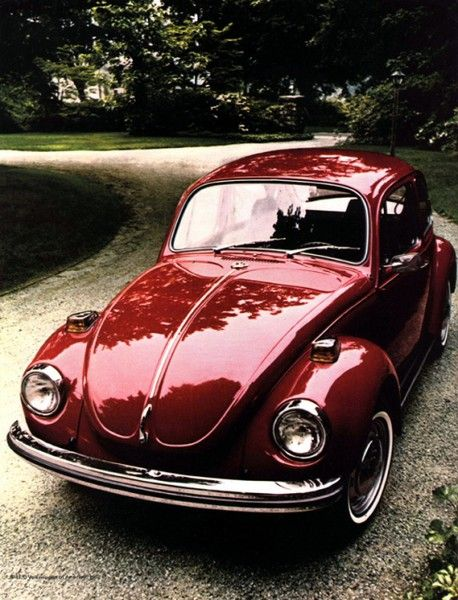
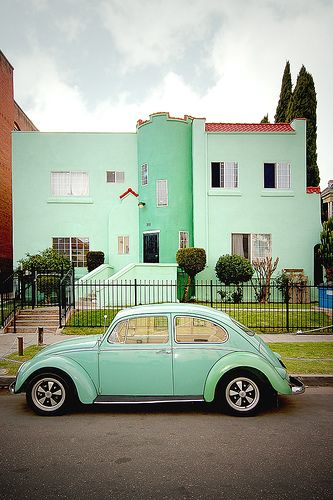
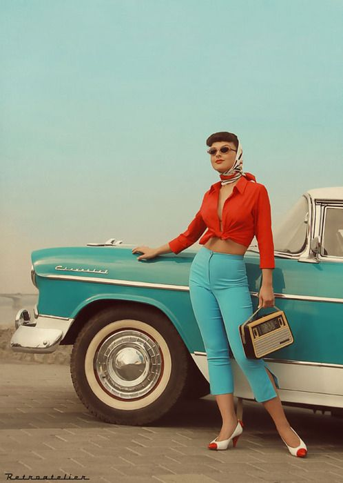

When you think of a ‘Car’, it is mostly for men, however, women love classic cars just as much as men do. There might be a different view of women looking at classic cars. Maybe women don’t have the same taste in the idea of ‘bigger, better’ as men do. Regardless of their small size of classic cars, these models will make any lady interested in.
1958-1960 FORD THUNDERBIRD
In 1958, the Thunderbird was redesigned to fit 4 passengers. The modification increased the vehicle weight to 1,000 pounds. This car is known as "Square 'Birds” because of their fairly blocky shape, these T-Birds offer the best value for today's collector-car dollar.
With their wide, imposing grilles that take up practically the entire front end, sculptured sides, fashionable fins, striking tail-end treatment and cozy, racy-looking interiors, these low-slung cars are full of character.
1967 VOLKSWAGEN BEETLE
This one is such a classic car for women that it almost doesn’t need any description. The charm of a small, smooth car appeals to ladies from all over the world. Another cute thing about its design is that its headlights feature ‘eyelids’. Beetles were inexpensive but never cheap. They were well-assembled, used first-rate interior materials and have a charm that’s lacking in later cars. Just about every part for a Beetle is readily available and most are quite inexpensive.
1967 MORRIS MINOR CONVERTIBLE
Morris Minor is a British brand of automobiles, which debuted with its first cars in the brinks of 1948. All the models were designed to be small, fuel-efficient vehicles, especially since they were launched following WWII. The 1967 convertible was a limited edition, having been produced in only 1,000 numbers. This one comes with a 948 cc engine. The only possible downfall of choosing this model is the fact that its manufacturers didn’t necessarily focus on safety features, and therefore the driving experience could get somewhat risky. Nowadays, drivers have the opportunity to equip their cars with almost any other supplementary features, making even very old models turn into fully loaded automobiles.